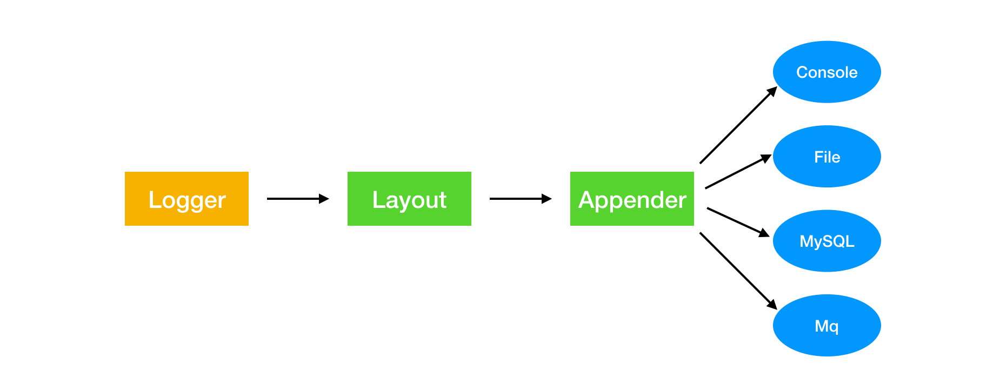
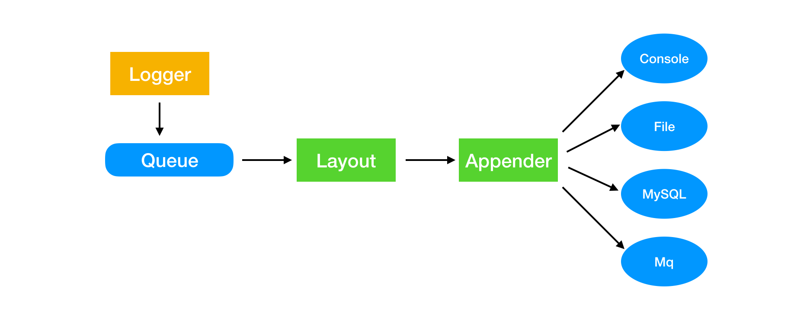
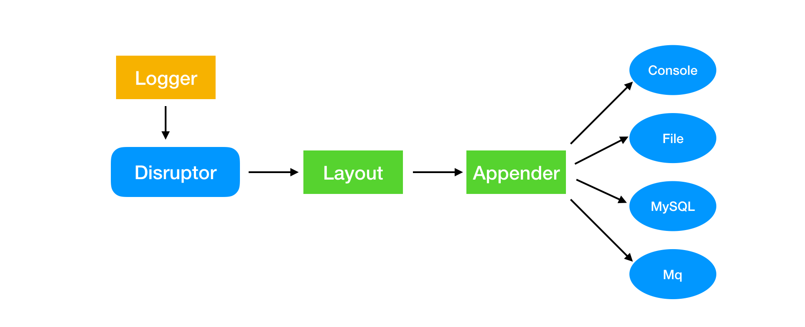
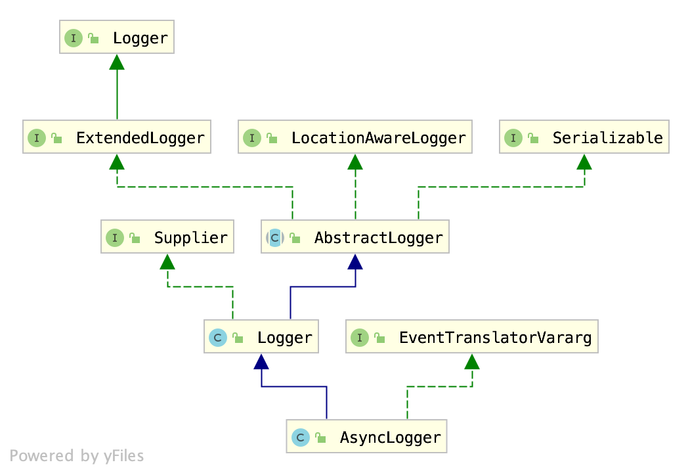

Disruptor如何搭配Log4j2
日志对大型系统很重要，在排查系统问题的时候，主要依靠日志。
日志很重要，但又能不影响程序的性能，比如一个接口的响应时间本来是 50 ms，结果加了日志之后，变成了 100 ms，这肯定没办法接受。
让日志不影响系统性能的方式有以下的思路：
- 减少日志量
- 不在日志中做字符串拼接，而使用占位符的方式来拼接日志
- 将日志记录的方式从同步变成异步
减少日志量不是非常可行，在某些情况下，就是需要记录比较多的日志，而且这种方式需要依靠开发人员的自觉，很难完全控制。
不使用字符串拼接的方式比较好实现，现在主流的日志框架中都实现了使用占位符的方式来记录日志信息，这样能够节省大量拼接字符串的时间，这种方式好实现，这种方式已经成为日志记录中的标配。
而本文重点要说的是第三点，这种方式对性能的提升也是最大的，但不是所有的日志框架都支持，而 Log4j2 就支持，之前我写过一篇对 Log4j2 的简介，可以点击查看。
Log4j2 工作流程
Log4j2 运行的流程如下所示：

Log4j2 主要由三个组件组成，Logger、Layout、Appender。
Logger 就是在程序中用来记录日志的对象：
1
private static final Logger logger = LogManager.getLogger(Log4j2HelloWorld.class);
Layout 则用来对日志信息进行格式化：
1
2
3<PatternLayout>
<Pattern>%d %p %c{1.} [%t] %m%n</Pattern>
</PatternLayout>
默认情况下，一条日志信息需要被 Appender 处理完成之后才算是记录完成，在记录日志的过程中，程序不会往下执行，如果日志很大，就会对程序的性能造成影响，整个过程是同步的，所以优化的思路是把日志记录的过程变成异步，让日志记录不会影响程序的执行。
所以 Logger 在获取到日志信息之后，不会立马进行日志格式化和存储，会先把日志信息放到一个队列中，如下图所示：

因为系统中日志产生的速度非常快，所以要求这个队列的性能很好，如果日志的处理跟不上日志的产生速度，那么就会造成日志的信息的丢失，这也是我们不希望看到的。
Disruptor 对 Log4j2 的改造
Disruptor 有着非常好的性能，刚好满足上面我们所提到的要求，在 Log4j2 中加上 Disruptor 之后，我们的日志处理流程就变成了下面这样：

比较有意思的是，Log4j2 中只在 Logger 这块使用了 Disruptor，按照上面的思路，其实 Appender 也可以进行异步处理，Log4j2 也确实提供了异步的方式，但是是使用 ArrayBlockingQueue，而没有使用 Disruptor， 而且官方也不推荐使用异步 Appender。
我理解为既然要进行异步，那么就彻底一点，就应该把日志的所有处理都异步进行处理，如果使用异步 Appender，日志的格式化还是要进行同步处理。
回到正题，Disruptor 是如何在 Log4j2 中使用的呢？
在 Log4j2 中，有一个 AsyncLogger，这个类完成了对 Disruptor 的包装，类结构如下：

AsyncLogger 中调用了 AsyncLoggerDisruptor，这个类才真正了完成异步日志处理。
一个 Disruptor 官方 Demo 如下：
1
2
3
4
5
6
7
8
9
10
11
12
13
14
15
16
17
18LongEventFactory factory = new LongEventFactory();
int bufferSize = 1024;
Disruptor<LongEvent> disruptor = new Disruptor<LongEvent>(factory, bufferSize, DaemonThreadFactory.INSTANCE);
disruptor.handleEventsWith(new LongEventHandler());
disruptor.start();
RingBuffer<LongEvent> ringBuffer = disruptor.getRingBuffer();
LongEventProducerWithTranslator producer = new LongEventProducerWithTranslator(ringBuffer);
ByteBuffer bb = ByteBuffer.allocate(8);
for (long l = 0; true; l++) {
bb.putLong(0, l);
producer.onData(bb);
Thread.sleep(1000);
}
上面是官方的一个例子，从上面可以发现，使用 Disruptor 时，需要以下这些组件：
- Factory: 用户创建消息对象
- Disruptor 对象: disruptor 启动之后会以一个独立的线程在后台运行
- Rinbuffer: 很明显，用来作为消息队列
- Producer: 生产者，用来生产消息
- EventHandler: 消费者，处理消息
同样，在 Log4j2 中，也是同样的使用方式，AsyncLoggerDisruptor 中有一个 start 方法，在这个方法中，同样也是完成了对这些组件的初始化：
1
disruptor = new Disruptor<>(RingBufferLogEvent.FACTORY, ringBufferSize, threadFactory, ProducerType.MULTI, waitStrategy);
RingBufferLogEvent.FACTORY，这是 RingBufferLogEvent 中的工厂单例，主要用来生成日志对象实例。
RingBufferLogEventHandler 是日志的消费者，用来处理日志信息，这里的实现很有意思，在 Handler 中，还是调用了 RingBufferLogEvent 的 execute 方法来进行日志的处理，而实际日志会被怎么处理，还是要看具体的配置，这在程序运行的时候才能决定。
1
2
3
4
5
6
7
8public void onEvent(final RingBufferLogEvent event, final long sequence,
final boolean endOfBatch) throws Exception {
try {
event.execute(endOfBatch);
}
finally {
}
}
使用过日志就知道，日志有很多的重载方法，这是为了应对更多的场景，所以对应 Disruptor 中的生产者也有很多的实现，生产者都在 AsyncLogger 中实现，
1
2
3
4
5
6
7
8
9
10
11
12private final TranslatorType threadLocalTranslatorType = new TranslatorType() {
void log(String fqcn, StackTraceElement location, Level level, Marker marker, Message message,
Throwable thrown) {
logWithThreadLocalTranslator(fqcn, location, level, marker, message, thrown);
}
void log(String fqcn, Level level, Marker marker, Message message, Throwable thrown) {
logWithThreadLocalTranslator(fqcn, level, marker, message, thrown);
}
};
上面的代码就是生产者的一种实现。
其实 Log4j2 中使用 Disruptor 也没有什么特别的地方，但是却把同步记录日志的机制换成了高性能的异步记录方式。